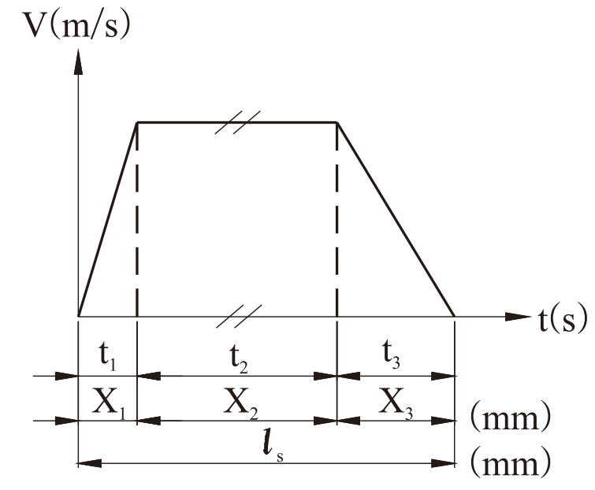
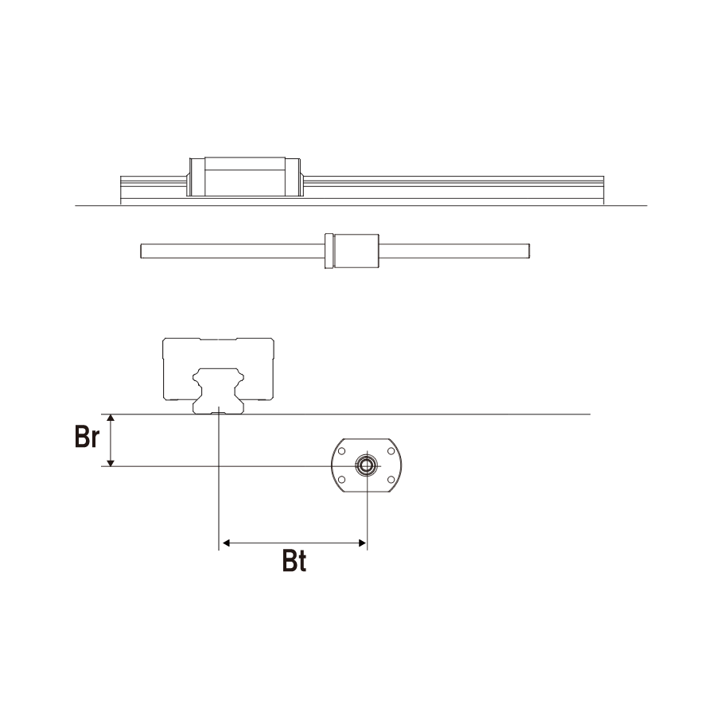
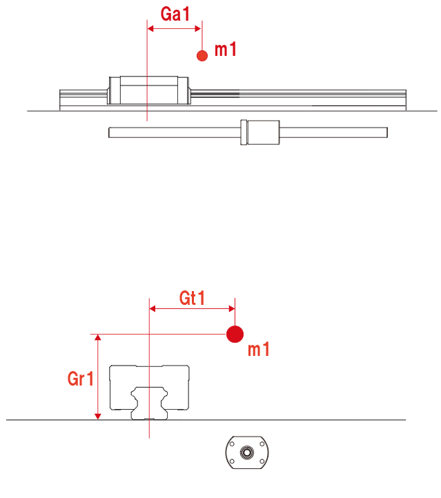

1.Model selection:
2.Installation selection:
(1)Installation type:
(2)Num of rail and block:
(3)Angle θ=
3.Velocity condition:
(1)Velocity(V)=
(2)Load factor(fw)=
(3)Acceleration time(T1)=
(4)Deceleration time(T3)=
(5)Stroke(Ls)=
(6)Rounds per minute(n)=
4.Operating condition:
(1)Block type:
(2)Preload grade:
(3)Position of trust Br=
(4)Position of trust Bt=
Distance between rails Rs=
Distance between blocks Bs1=
Distance between blocks Bs2=
Distance between blocks Bs3=
5.Loading selection:
(1)Num of loading:
(2)Loading1: Mass m1=
Position Ga1=
Position Gt1=
Position Gr1=
(3)Loading2: Mass m2=
Position Ga2=
Position Gt2=
Position Gr2=
(°)
(m/s)
(s)
(s)
(mm)
(/min)
(mm)
(mm)
(mm)
(mm)
(mm)
(mm)
(kg)
(mm)
(mm)
(mm)
(kg)
(mm)
(mm)
(mm)

3.Velocity graph:

4.Operating diagram:

5.Loading diagram:

2.Installation diagram:
| Calculated item | Result |
|---|---|
| Static safety factor fs | |
| Nominal life L(km) | |
| Service life time Lh(h) |
Declaration: The above results serve as the theoretical
basis of calculation only, do not serve as the actual lifespan.
Note:
1.Actual lifespan may affected by poor working condition,
lubrication and installation accuracy.
2.When static safety factor(fs)＜1.0, load exceeds basic
static load rating of linear guide,nominal life cannot be calculated.
Please re-select the model type, velocity or load and calculate.
3.Equipments tend to involve vibrations or variable load during
high-speed(or high-acceleration or deceleration)(V＞2m/s or a＞50m/s2)
motion,test to verify is recommended.
4.Please contact us if other installation types,
velocity or loading conditions are required.
© Copyright AirTAC